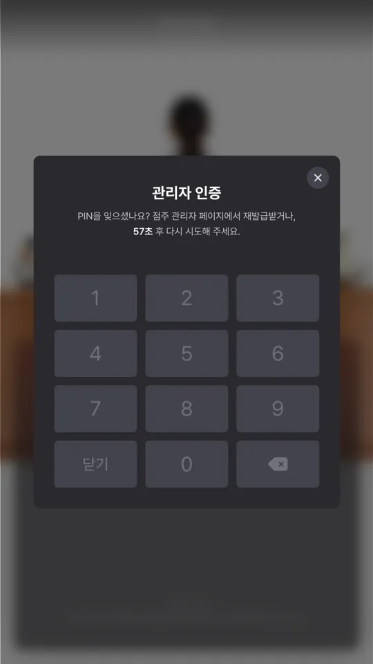
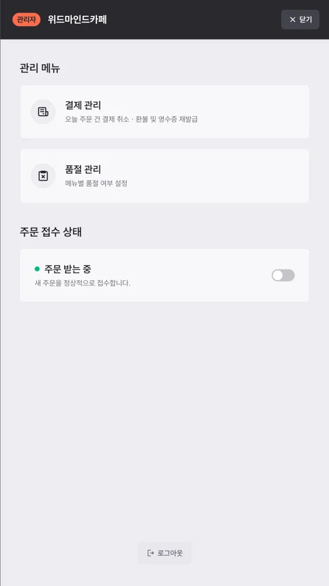
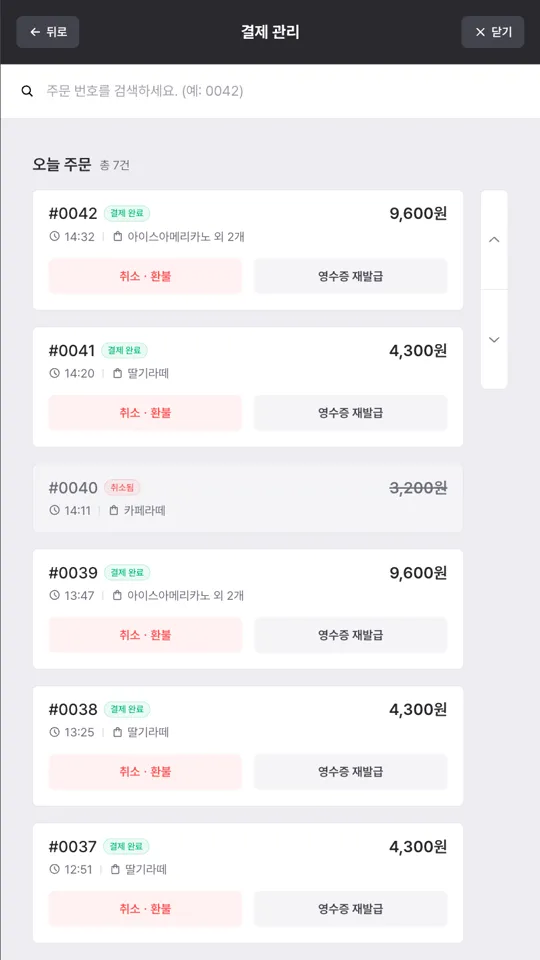
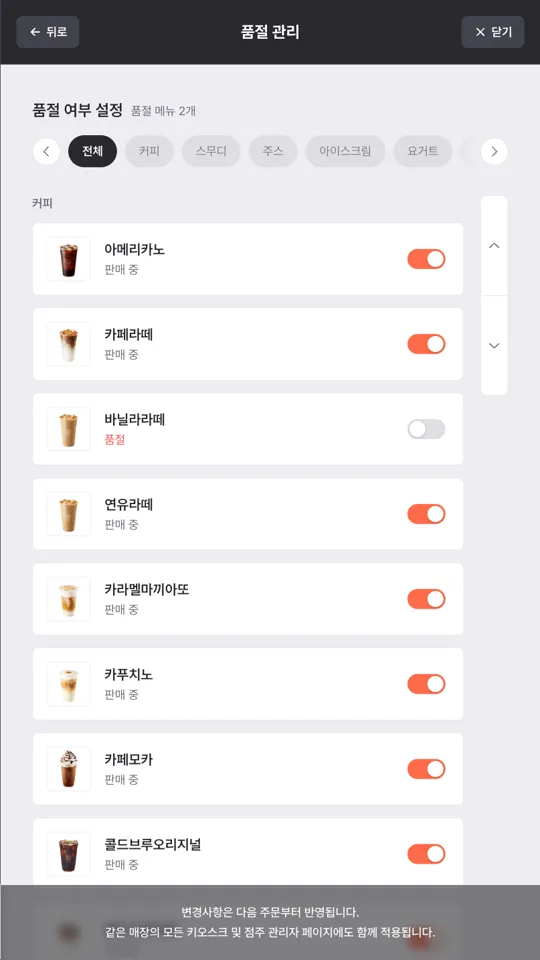

주문 흐름 전체. 듣고 있는 상태를 맨 위에 고정해 두고, 그 아래에 손으로 고를 수 있는 메뉴를 같이 뒀습니다. 음성으로 메뉴를 고르고 옵션을 정한 뒤 장바구니에 담아 주문까지 이어집니다.
프로젝트 개요
Gemini API를 연동한 음성 주문 카페 키오스크 시스템입니다.
자연어 대화로 메뉴 주문부터 결제까지 완성하는 무인 주문 시스템으로,
부산 가상융합 실증사업의 일환으로 개발했습니다.
사용자는 홀로그램 인터페이스를 통해 AI와 대화하며 주문할 수 있고,
음성 인식과 시각적 피드백을 함께 제공해 누구나 쉽게 쓸 수 있는 키오스크 경험을 목표로 했습니다.
키오스크는 처음 쓰는 사람이 도움 없이 끝까지 가야 하는 화면입니다.
설명서를 읽지 않고, 뒤에 줄이 서 있고, 잘못 눌러도 되돌릴 수 있어야 합니다.
그래서 이 프로젝트에서 정리한 산출물은 화면 목록이 아니라 전체 주문 프로세스 플로우차트와 시나리오였습니다.
시작부터 결제까지의 경로와 되돌아가는 지점. 보라색 점선이 되돌아가는 경로로,
장바구니의 더 주문하기는 주문 입력으로, 결제 실패는 결제수단 선택으로 돌아갑니다.
오른쪽 칸은 본류에서 빠지는 되묻기 · 타임아웃 · 실패 처리입니다.
담당 역할
전체 프론트엔드 개발과 AI 연동을 맡았습니다.
음성 인식 기반 UI/UX 설계 및 구현말로 하는 주문과 손으로 하는 주문이 같은 화면에서 섞여 쓰이도록 구성했습니다.
Gemini API 연동 및 자연어 처리 로직 개발주문 문장을 메뉴·수량·옵션으로 해석하는 구간을 붙였습니다.
홀로그램 디스플레이 최적화 인터페이스 구현일반 모니터와 다른 표시 조건에 맞춰 화면 구성을 조정했습니다.
주문 및 결제 플로우 프론트엔드 개발주문 확인과 수정, 결제까지의 단계를 구현했습니다.
키오스크 관리자 모드 개발매장 운영자가 쓰는 로컬 관리 화면을 만들었습니다.
고객 주문 흐름
손님이 기기 앞에 서서 음료를 받을 때까지의 경로입니다.
시작 화면 — AI 홀로그램 캐릭터가 맞이하며 주문을 시작합니다.
메뉴 선택 — 음성 또는 터치로 메뉴를 고릅니다.
옵션 선택 — 사이즈, 온도, 토핑 등을 음성 명령으로 지정합니다.
주문 확인 — AI가 주문 내역을 읽어 주고, 손님이 수정할 수 있습니다.
AI 음성 인터랙션
자연어 처리 — “아이스 아메리카노 두 잔 주세요” 같은 문장을 그대로 받습니다.
실시간 피드백 — 음성 인식 상태를 화면에 표시해, 듣고 있는지 아닌지를 알 수 있게 합니다.
AI 정책 안내 — 음성 데이터 처리 방식을 화면에서 안내합니다.
음성 입력에서 가장 큰 문제는 기기가 지금 듣고 있는지 알 수 없다는 점입니다.
말했는데 반응이 없으면 손님은 같은 말을 반복하고, 그 사이 인식은 더 어긋납니다.
그래서 인식 상태를 항상 화면에 표시하고, 음성이 실패했을 때 터치로 넘어갈 수 있는 경로를 같은 화면에 남겨 뒀습니다.
공통 요소
팝업 / 모달 — 주문 오류와 안내 메시지를 처리합니다.
매장 FAQ — 자주 묻는 질문과 정책 문서를 제공합니다.
기기 · 운영자 흐름
손님 화면과 완전히 분리되는 영역입니다.
매장 직원이 영업 중에 품절 처리나 주문 중단을 해야 하는데,
그 입구가 손님에게 보이면 안 되기 때문에 진입 경로 자체를 숨겨 놨습니다.
최초 로그인 — 기기 초기 설정과 인증을 진행합니다.
PIN 입력 — 운영자 인증 단계입니다.
히든 진입 — 손님 화면에 노출되지 않는 경로로 관리자 모드에 들어갑니다.
로컬 관리 메뉴 — 결제, 품절, 주문 일시중지를 관리합니다.
관리 기능은 매장에서 즉시 처리해야 하는 것들만 로컬에 뒀습니다.
품절과 주문 중단은 지금 당장 눌러야 하는 일이고, 통계처럼 나중에 봐도 되는 것은 여기에 넣지 않았습니다.

PIN 입력 — 10회 틀리면 1분간 잠깁니다.

관리 메뉴 — 결제 · 품절 · 주문 접수 상태.

결제 관리 — 당일 주문만, 전체 취소.

품절 관리 — 저장 없이 즉시, 다음 주문부터.
전시 부스에 설치.
기술 스택
자연어 주문 해석은 직접 규칙을 짜는 대신 Gemini API에 맡기고,
프론트엔드는 인식 상태 표시와 주문 상태 관리에 집중했습니다.